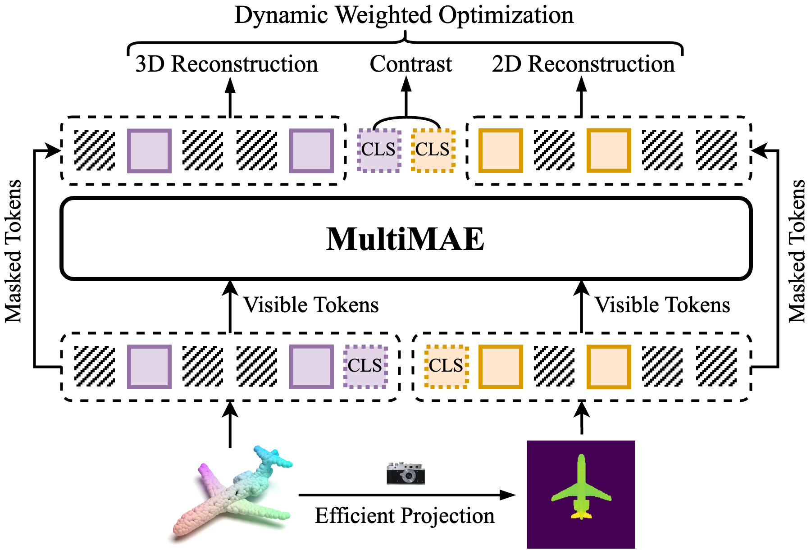
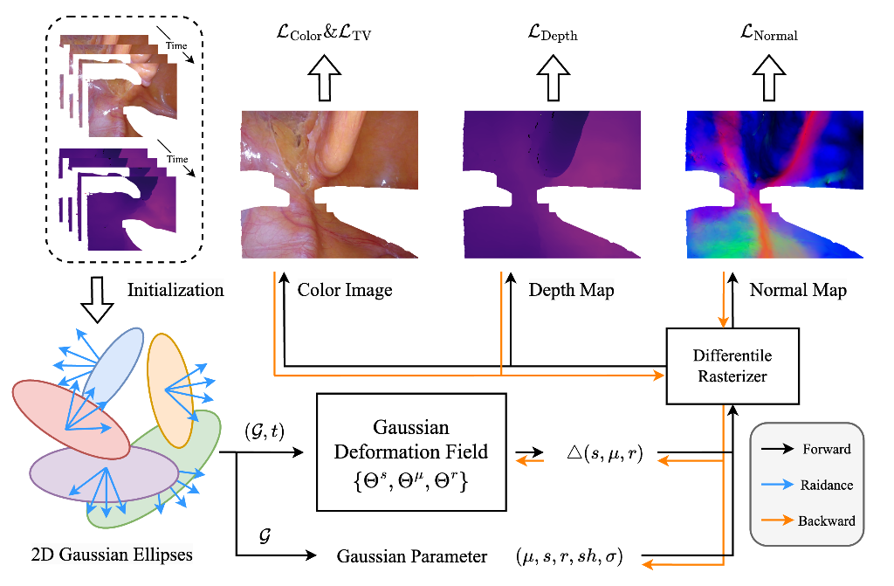

|
Wenxu Zhou I am a master student at University of Science and Technology of China, and supervised by Prof. Dong Yin in EEIS Department. Before that, I received my bachelor’s degree in Electronic Information Engineering at Anhui University. My research interests include 3D computer vision and medical 3D modeling. Some papers are highlighted. |
{kind=link}
Publications |
|

|
MultiPoint: MultiMAE for Point Cloud Self-supervised Learning
Wenxu Zhou, Dong Yin AAAI, 2026 (Under Review) MultiPoint utilizes the Multi-modal Multi-task Masked Autoencoder (MultiMAE) for point cloud Self-supervised Learning, and achieves superior performance in downstream tasks. |

|
Open-Vocabulary Endoscopic Scene Understanding via 4D Language Gaussian Splatting
Wenxu Zhou, Dong Yin BIBM, 2025 (Under Review) EndoLGS, a 4D Language Gaussian Splatting for endoscopic scenes dynamic reconstruction and semantic understanding, shows significant potential for robot-assisted surgery. |
|

|
Endo2DGS: Endoscopic Scene Reconstruction with High-fidelity Geometry
Wenxu Zhou, Taoran Sun, Tianle Hu, Jiulin Li, Dong Yin PRCV, 2025 Endo2DGS, a novel reconstruction framework for endoscopic scenes, addresses geometric inconsistencies in dynamic digestive tract modeling, achieving high-fidelity 4D reconstruction. |
Teaching |

|
Teaching Assistant Data Structure and Algorithm (210070.06) 2024 Fall, Undergraduate/ Major Course School of Information Science and Technology |
Academic Services |
| Conference Reviewer: PRCV, AAAI |
|
|